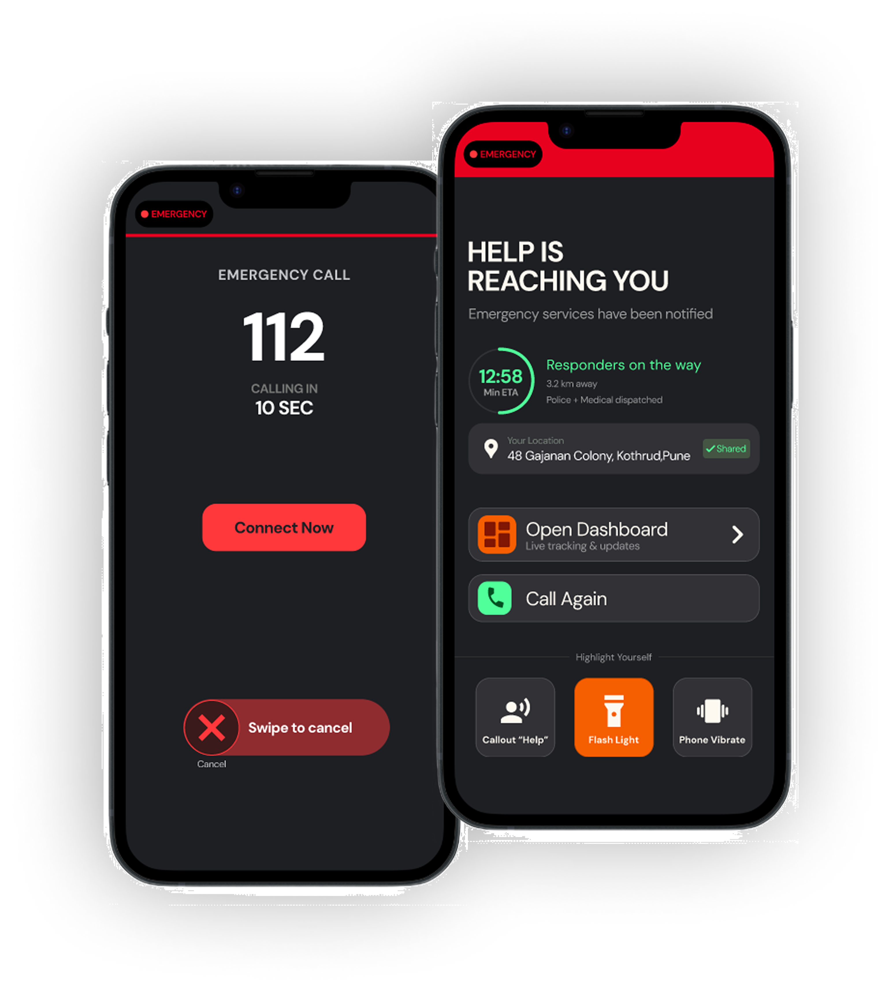
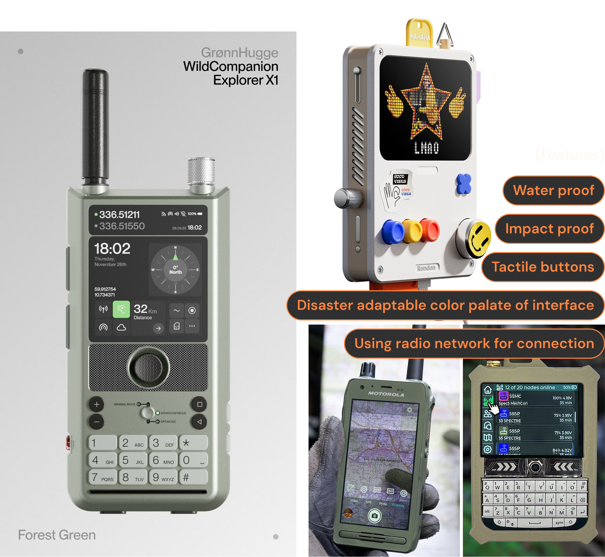
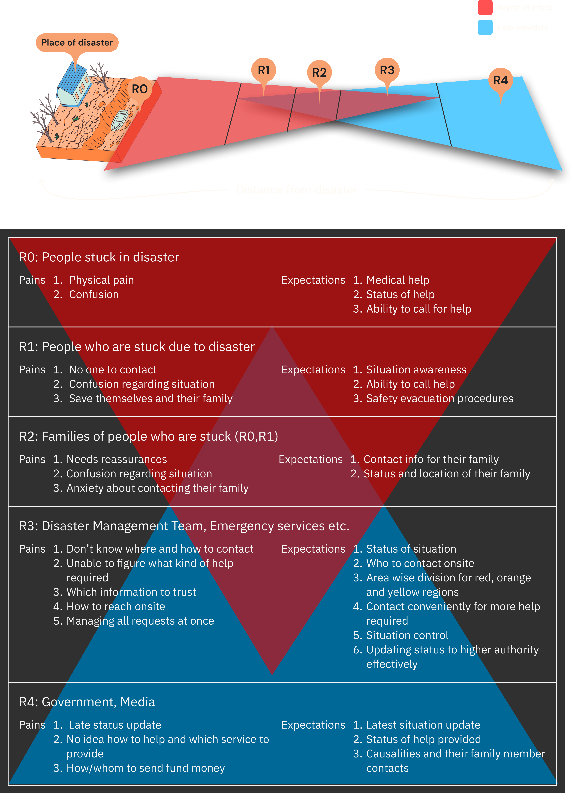

A 10-second countdown with a swipe to cancel
Panic causes accidental calls, so starting is fast and cancelling is deliberate.
An emergency interface that connects people trapped in a disaster with rescue teams in real time, so help arrives faster and responders see the real situation.
Outcome: A unified emergency response interface for victims and rescue teams.

01 / The problem
Disasters are managed locally and outcomes depend on preparedness. The people hurt most are those trapped and the teams on the ground, because information is missing and communication is unclear.
Two perspectives
“The people stuck in disaster have no idea who to contact or where to contact.”
“The services have no point of contact and no understanding of the real situation.”
02 / Key insight
One unified platform with two linked views, one for victims and one for rescuers.
03 / Research basis
Method
I traced how information moves from the first caller to every responder, to find where it gets lost.
[Add your sources: interviews, reports, or desk research]
What information is needed
| Region | Biggest pain | What Arohi does |
|---|---|---|
| R0 Trapped | Physical pain, confusion | One-tap SOS, camera, “help is reaching you” countdown |
| R1 Stuck nearby | No one to contact | Call 112 and see status of help |
| R2 Families | Anxiety, no status | Status and location updates |
| R3 Rescue teams | Which information to trust, too many requests | Dashboard with red, orange, yellow zones |
| R4 Govt and media | Late updates | Live status of help provided |
04 / Design decisions
Panic causes accidental calls, so starting is fast and cancelling is deliberate.
Trapped people have no way to signal location, so the phone becomes a beacon.
Victims and rescuers need the same facts at different depths.
Step 1 · Navigation flow for victims
Swipe to see the full flow
Step 2 · Navigation for responders
05 / Prototype
The Victim SOS app prototype demonstrates the emergency call flow, countdown, connected responders, estimated arrival, and personal highlighting tools.
The green and orange elements evoke a sense of relief that the help is on the way.
Live map with priority zones and a request queue (iPad/desktop). Click inside to explore.
Try: tap a red zone on the map, then check the request queue.
06 / Cognitive Walkthrough
07 / Constraints and next steps
The UI is the easy part; the next step is a resilient device. The information architecture and navigation stay constant because that is where UX matters most in a crisis.

Appendix
